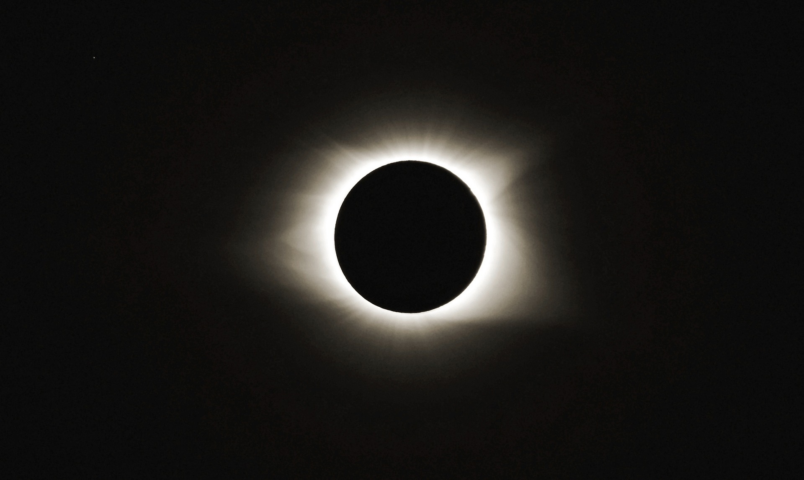

Затмение -
астрономическая ситуация, при которой одно небесное тело заслоняет свет от другого небесного тела
астрономическая ситуация, при которой одно небесное тело заслоняет свет от другого небесного тела


астрономическое явление, которое заключается в том, что Луна закрывает (затмевает) полностью или частично Солнце от наблюдателя на Земле.
Солнечное затмение возможно только в новолуние, когда сторона Луны, обращённая к Земле, не освещена, и сама Луна не видна. Затмения возможны, только если новолуние происходит вблизи одного из двух лунных узлов (точки пересечения видимых орбит Луны и Солнца), не далее, чем примерно в 12 градусах от одного из них.
затмение, которое наступает, когда Луна входит в конус тени от Земли.
Диаметр пятна тени Земли на расстоянии 363 000 км (минимальное расстояние Луны от Земли) составляет около 2,6 диаметра Луны, поэтому Луна может быть затенена целиком. В каждый момент затмения степень покрытия диска Луны земной тенью выражается фазой затмения. Величина фазы Φ определяется расстоянием θ от центра Луны до центра тени. В астрономических календарях приводятся величины Φ и θ для разных моментов затмения.
масштабный космический выброс энергии взрывного характера, в настоящее время наблюдаемый в отдалённых галактиках в самой жёсткой части электромагнитного спектра.
Гамма-всплески (ГВ) — наиболее яркие электромагнитные события, происходящие во Вселенной. Продолжительность типичного ГВ составляет несколько секунд, но он может длиться и от миллисекунд до часа. За первоначальным всплеском обычно следует долгоживущее «послесвечение», излучаемое на более длинных волнах (рентген, УФ, оптика, ИК и радио).
Большинство наблюдаемых ГВ, предположительно, представляет собой сравнительно узкий луч мощного излучения, испускаемого во время вспышки сверхновой, когда быстро вращающееся ядро массивной звезды коллапсирует, превращаясь либо в нейтронную звезду, либо в чёрную дыру. Подкласс ГВ — «короткие» всплески — по-видимому побочный эффект другого процесса, возможно слияния двойных нейтронных звёзд.
Большинство наблюдаемых ГВ, предположительно, представляет собой сравнительно узкий луч мощного излучения, испускаемого во время вспышки сверхновой, когда быстро вращающееся ядро массивной звезды коллапсирует, превращаясь либо в нейтронную звезду, либо в чёрную дыру. Подкласс ГВ — «короткие» всплески — по-видимому побочный эффект другого процесса, возможно слияния двойных нейтронных звёзд.
Источники ГВ находятся на расстояниях в миллиарды световых лет от Земли, что означает их чрезвычайную мощность и редкость. За несколько секунд вспышки высвобождается столько энергии, сколько Солнцем выделилось бы за 10 миллиардов лет свечения. За миллион лет в одной галактике обнаруживаются лишь несколько ГВ[3]. Все наблюдаемые ГВ происходят вне нашей галактики, кроме явления родственного класса — мягких повторяющихся гамма-всплесков, которые ассоциируются с магнетарами Млечного Пути. Имеется предположение, что ГВ, произошедший в нашей галактике, мог бы привести к массовому вымиранию всего живого на Земле (кроме глубоководных биовидов)[4].
Самый мощный гамма-всплеск в истории человечества
астрономическое явление, при котором некоторое количество планет Солнечной системы оказывается «на одной прямой» от Солнца с разбросом в 20-30°[1]. При этом они находятся более или менее близко друг к другу на небесной сфере.
Понятие «парад планет» не является научным и используется в астрономии только для её популяризации.
В астрономии нет четкого критерия «близости» планет, поэтому термин парад планет носит качественный характер. Более строгий смысл он имеет в астрологии, где сближением считается расположение планет в одном зодиакальном созвездии. Например, в 2002 году (в конце апреля — начале мая) четыре планеты — Меркурий, Венера, Марс, Сатурн — встретились в созвездии Тельца, а пятая — Юпитер — в соседнем созвездии Близнецов, таким образом этот парад не был великим.
В зависимости от числа планет, участвующих в параде, различают малые парады (4 планеты) и большие (или великие) парады — когда собираются 5 планет. Малые парады планет происходят примерно каждые 20 лет, большие — гораздо реже. Кроме того различают видимые и невидимые парады планет, последние имеют место, если положение планет на небе оказывается близким к Солнцу. Если исходить не из близости планет, а точного их расположения на одной прямой, то такое событие происходит раз за многие миллионы лет.
Парад планет: что происходит, когда планеты встают в ряд?


Cсылки на источники:
Затмение, солнечное и лунное затмения Гамма-всплески Парад планет Видео с канала "Упоротый Звездочёт" Видео с канала "KOSMO"Все фото и видео взяты из открытых источников и НЕ нарушают авторские права правообладателя
Pixabay.com - видео и фото Coverr.co - видео-фоны Yandex.ru - картинки*Сайт является лишь шаблоном, автор преследует цель только показать навыки вёрстки сайта на примере "Астрономических явлений". Автор не пытается нарушить чьи-либо права. Сайт сделан в развлекательных целях. Сайт не является адаптивным Рекомендуемое разрешение монитора для просмотра 1920x1080px